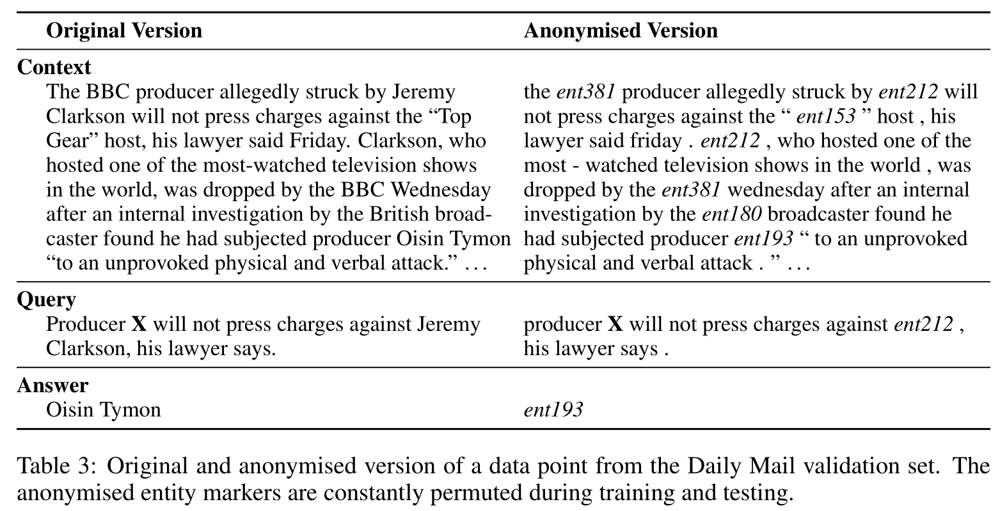
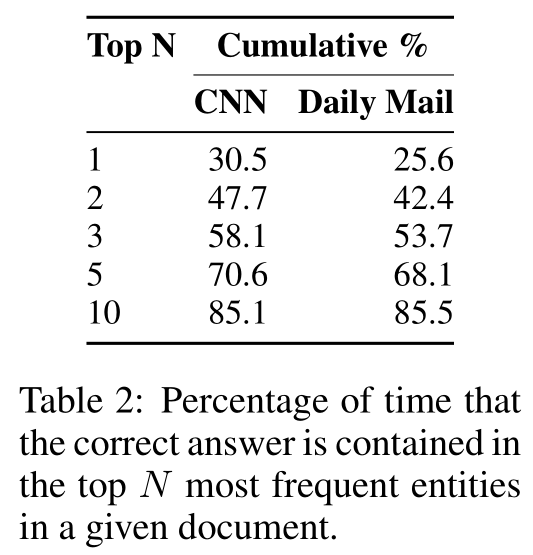

1. Supervised training data for reading comprehension
The reading comprehension task naturally lends itself to a formulation as a supervised learning problem.
[info] formulation：公式化的
Specifically we seek to estimate the conditional probability p(a|c,q), where c is a context document, q a query relating to that document, and a the answer to that query.
[success]
目标是估计：
a是回答，c是文本，q是问题
For a focused evaluation we wish to be able to exclude additional information, such as world knowledge gained from co-occurrence statistics, in order to test a model’s core capability to detect and understand the linguistic relationships between entities in the context document.
[success]
co-occurrence statistics：同现统计
本文对阅读理解模型的评价方法：
不关注从“同现统计”中获得的world knowledge，
只关注entity之间的语言关系。
Such an approach requires a large training corpus of document–query–answer triples and until now such corpora have been limited to hundreds of examples and thus mostly of use only for testing [9]. This limitation has meant that most work in this area has taken the form of unsupervised approaches which use templates or syntactic/semantic analysers to extract relation tuples from the document to form a knowledge graph that can be queried.
[success]
在labelled data不足的情况下，通常用labelled data作为测试，用unlabelled data作为非监督模型的训练。
非监督模型的训练方法：
使用“template”或“syntactic/semantic”分析器
提取“元组关系”
构建“知识图谱”
Here we propose a methodology for creating real-world, large scale supervised training data for learning reading comprehension models. Inspired by work in summarisation [10, 11], we create two machine reading corpora by exploiting online newspaper articles and their matching summaries.
[info] summarisation：摘要
We have collected 93k articles from the CNN 1 and 220k articles from the Daily Mail 2 websites. Both news providers supplement their articles with a number of bullet points, summarising aspects of the information contained in the article.
[info] bullet points：关键词
Of key importance is that these summary points are abstractive and do not simply copy sentences from the documents.
[success]
本文方法所需要的资源：
（1）原始文本
（2）文本对应的关键词
（3）文本对应的摘要。
We construct a corpus of document–query–answer triples by turning these bullet points into Cloze [12] style questions by replacing one entity at a time with a placeholder.
[success]
本文提供的资源处理的过程：
（1）turning these bullet points into Cloze
（2）replacing one entity at a time with a placeholder
得到的结果：
document–query–answer triples
This results in a combined corpus of roughly 1M data points (Table 1). Code to replicate our datasets—and to apply this method to other sources—is available online 3 .
1.1. 2.1 Entity replacement and permutation
[success]
permutation：排列
这一节的目的：去掉world knowledge，保留entity之间的关系
Note that the focus of this paper is to provide a corpus for evaluating a model’s ability to read and comprehend a single document, not world knowledge or co-occurrence. To understand that distinction consider for instance the following Cloze form queries (created from headlines in the Daily Mail validation set): a) The hi-tech bra that helps you beat breast X; b) Could Saccharin help beat X ?; c) Can fish oils help fight prostate X ? An ngram language model trained on the Daily Mail would easily correctly predict that (X = cancer), regardless of the contents of the context document, simply because this is a very frequently cured entity in the Daily Mail corpus.
[success]
用一个例子说明“world knowledge”和“entity之间的关系”的区别。
问题中的X代表Cloze中要填的空。
To prevent such degenerate solutions and create a focused task we anonymise and randomise our corpora with the following procedure, a) use a coreference system to establish coreferents in each data point; b) replace all entities with abstract entity markers according to coreference; c) randomly permute these entity markers whenever a data point is loaded.
[info]
degenerate：退化
coreference system：[?]共指系统
coreference：参照物
[?] 上面三步的过程不是太懂
Compare the original and anonymised version of the example in Table 3. Clearly a human reader can answer both queries correctly. However in the anonymised setup the context document is required for answering the query, whereas the original version could also be answered by someone with the requisite background knowledge. Therefore, following this procedure, the only remaining strategy for answering questions is to do so by exploiting the context presented with each question. Thus performance on our two corpora truly measures reading comprehension capability. Naturally a production system would benefit from using all available information sources, such as clues through language and co-occurrence statistics.

[success] anonymise and randomise的好处：
只有读懂了文本才能回答，与先验无关，因此能衡量model是不是真的读懂了文本
Table 2 gives an indication of the difficulty of the task, showing how frequent the correct answer is contained in the top N entity markers in a given document. Note that our models don’t distinguish between entity markers and regular words. This makes the task harder and the models more general.

[success]
衡量工作难度的指标：
正确答案是否包含在top N entity marker中。